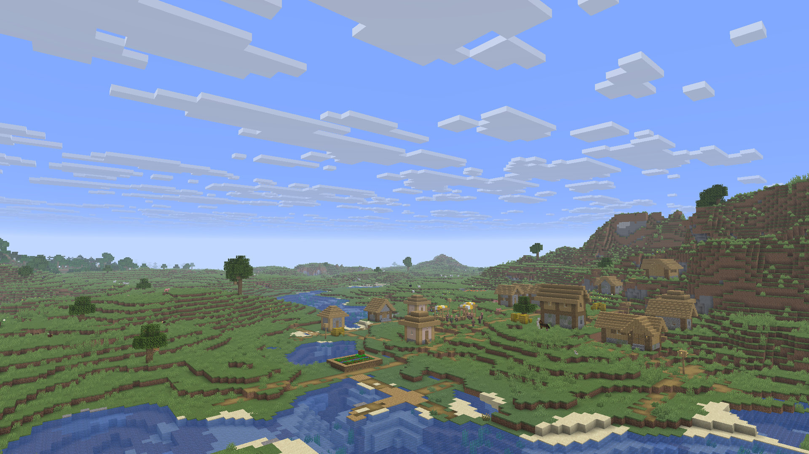

上次游玩
coffeeJava
memory内存 4.0 GB
最近的世界

新的世界生存模式 · 昨天 21:37个模组
世界
Java Edition · 生存模式
启动日志
[21:37:02] [main/INFO] Loading Minecraft 1.20.1 [21:37:02] [main/INFO] Loading Fabric Loader [21:37:03] [main/INFO] Preparing client [21:37:05] [Render thread/INFO] Backend: LWJGL